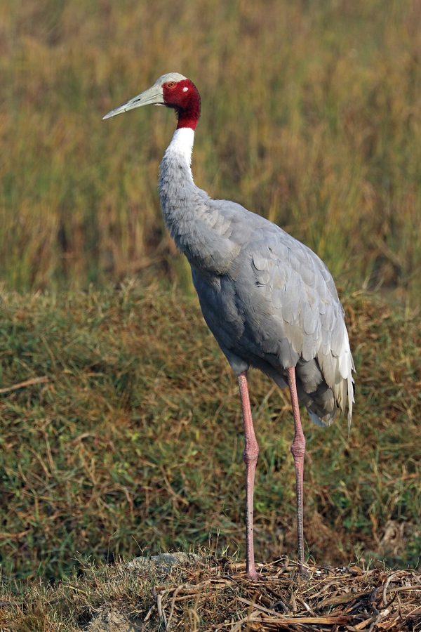

सारसSarus Crane
Antigone antigone · Gruidae · BRD-0002

- Scientific name
- Antigone antigone (Linnaeus, 1758)
- Family
- Gruidae
- Hindi
- सारस
- Status here
- native
- IUCN
- VU
When to look कब देखें
Present all year.
Sarus Crane (Antigone antigone)
Antigone antigone (Linnaeus, 1758) — Gruidae
The world's tallest flying bird — and Uttar Pradesh's state bird — wading through a flooded paddy field in pairs is one of the defining images of rural eastern UP. Its call carries across the open countryside for kilometres. And it is disappearing.
संसार की सबसे ऊँची उड़ने वाली चिड़िया — और उत्तर प्रदेश का राज्य पक्षी — जोड़ी में धान के खेत में विचरते हुए पूर्वी UP का एक परिभाषित दृश्य है। इसकी आवाज़ मीलों तक सुनाई देती है। और यह गायब हो रहा है।
हिंदी परिचय Hindi Overview
सारस (Antigone antigone) उत्तर प्रदेश का राज्य पक्षी है। यह संसार की सबसे ऊँची उड़ने वाली चिड़िया है — लगभग 180 सेंटीमीटर लंबी। पूर्वी UP के धान के खेतों, झीलों, नदी किनारों और दलदली ज़मीन में यह जोड़ी में दिखती है।
सारस आजीवन एकसाथी रहता है — एक जोड़ा सालों-साल साथ रहता है। यदि एक मर जाए तो दूसरा उसी जगह लौटता रहता है। इसी गुण के कारण भारतीय संस्कृति में इसे प्रेम और निष्ठा का प्रतीक माना जाता है।
वाल्मीकि रामायण की पहली पंक्ति — पहला श्लोक — एक सारस (क्रौंच) जोड़ी के वियोग से जन्मी थी। यह इस पक्षी का सांस्कृतिक महत्व बताता है।
लेकिन आज सारस की संख्या घट रही है। दलदली ज़मीन को खेत बनाना, कीटनाशकों का उपयोग, और बिजली के तार — ये सब इसके लिए खतरनाक हैं।
Quick Identification शीघ्र पहचान
- Enormous bird — ~180 cm tall; wingspan ~240 cm — taller than most humans
- Grey body with bare red head and upper neck; white cheek patch
- Red skin on head extends behind eye, turns white below
- Long red legs, long neck, held straight in flight (unlike herons which tuck neck)
- Flight: slow, powerful wingbeats; neck and legs both fully extended
- Call: loud, trumpeting "kurr-rr-rr" — audible over 1 km; pairs often call together in duet
- Found in pairs — almost always in twos; rarely alone except when widowed
हिंदी — कैसे पहचानें:
लगभग 180 सेमी लंबी — एक इंसान से भी ऊँची चिड़िया।
शरीर भूरा-स्लेटी; सिर और ऊपरी गर्दन पर लाल नंगी त्वचा।
लंबी लाल टाँगें, लंबी गर्दन।
उड़ते समय गर्दन और टाँगें दोनों सीधी फैली — बगुले की तरह गर्दन मोड़ता नहीं।
आवाज़: तेज़, ऊँची, दूर तक सुनाई देने वाली "क्रूर-र-र" — जोड़ी अक्सर एक साथ बोलती है।
हमेशा जोड़ी में — अकेला शायद ही दिखे।
Morphology आकृति विज्ञान
Biometrics (subspecies antigone, northern India — the form in eastern UP):
| Measurement | Range |
|---|---|
| Total length | 1500–1800 mm |
| Wing (flattened chord) | 570–670 mm |
| Tail | 220–270 mm |
| Tarsus | 280–350 mm |
| Bill (culmen from base) | 150–180 mm |
| Weight | 5000–12000 g |
Size: 156–180 cm height (largest flying bird by height). Weight 5–12 kg. Wingspan 220–250 cm.
Head: Bare red skin covering crown, face, and upper neck. The red extends to behind the eye. Below the red zone, a white patch covers the cheek and lower neck region. Red colour intensifies during breeding season.
Body: Pale grey overall; flight feathers darker grey. Tertial feathers may form a drooping plume over the tail at rest.
Legs and feet: Long, pale reddish-pink. Three forward toes, one small hind toe — adapted for wading, not for perching in trees.
Bill: Long, straight, pale greenish-grey. Used for probing soil and shallow water.
Sexual dimorphism: Males slightly larger than females; both sexes identical in plumage.
Juvenile: Brown-grey, with feathered head (no red skin until ~1 year old). Legs pinkish-grey.
हिंदी: वयस्क में लाल नंगा सिर और गर्दन — यही सबसे पक्की पहचान है। युवा पक्षियों में पहले साल सिर पर पंख होते हैं, लाल त्वचा बाद में आती है। नर मादा से थोड़ा बड़ा।
Vocalisations. Three main call types:
- Contact and alarm call: A loud, metallic, trumpeting kurr-rr-rr or karrr given by both sexes when disturbed or to maintain contact; audible over a kilometre; frequency range typically between 1.0–2.0 kHz.
- Song (Unison call): A spectacular, loud duetting display where the male and female stand upright with wings partially spread; the male calls once followed by the female calling twice in rapid succession; reinforces the pair bond and defines territorial boundaries.
- Hiss and growl: A low-frequency warning sound produced at the nest when a potential threat approaches closely, indicating high-stress territorial defense.
Ecological Role पारिस्थितिक भूमिका
Omnivore and wetland forager: The Sarus Crane feeds in shallow water and agricultural fields, taking:
- Aquatic plants — roots, rhizomes, tubers of water plants
- Grain — paddy (rice), wheat (gleaned from harvested fields)
- Invertebrates — earthworms, insects, snails, crabs
- Small vertebrates — frogs, small fish, lizards, small snakes
Wetland health indicator: The presence of Sarus Cranes in an area indicates functional wetland ecosystems. They require large, open, relatively undisturbed shallow wetlands for breeding and roosting. Their disappearance from an area signals wetland degradation before other obvious signs appear.
Seed disperser: Some plant seeds survive gut passage and are deposited in wetland habitats. Minor role compared to frugivores, but ecologically present.
Cultural flagship: Perhaps more than any ecological function, the Sarus Crane draws conservation attention to wetlands. Protecting Sarus habitat protects dozens of other less charismatic species simultaneously.
हिंदी: सारस जल के पौधों की जड़ें, अनाज, केंचुए, कीड़े, मेंढक, और छोटी मछलियाँ खाता है।
जहाँ सारस है — वहाँ की दलदली ज़मीन अभी ठीक है। यह पर्यावरण स्वास्थ्य का सबसे बड़ा संकेतक है।
The Bond जोड़ी का रिश्ता
The Sarus Crane is one of the few bird species that forms a lifelong monogamous pair bond. A pair remains together year after year — feeding together, roosting together, nesting together, and defending the same territory across decades.
Pair bonds are reinforced by unison calling — a spectacular display where both birds stand upright, wings partially spread, and call alternately in a synchronised duet that can last several minutes. The female calls twice for every one call of the male. This display is performed to reinforce pair bonding and to warn rival cranes.
If a mate dies, the surviving crane may remain in the territory for months, calling. They do eventually re-pair, but the process is slow. This behaviour — and its human interpretation — is likely the origin of the Sarus Crane's deep association with devotion in Indian literature and folklore.
हिंदी: सारस जीवनभर एक ही साथी के साथ रहता है। दोनों साथ बोलते हैं — मादा नर से दोगुनी बार। यह "युगल गान" उनके रिश्ते को मज़बूत करता है।
वाल्मीकि का पहला श्लोक — "क्रौंचमिथुनादेकम्..." — एक सारस जोड़ी के बिछुड़ने का शोक था जो कविता बन गया।
Life Cycle / Phenology जीवन चक्र
Resident: Non-migratory — stays in the same territory year-round.
Breeding:
- Season: July–October, coinciding with the monsoon
- Nest: A large platform of reeds, grass, and aquatic vegetation, built in shallow water (20–50 cm depth), often in the middle of paddy fields. Can be 1.5–2 m wide. Both parents build.
- Clutch: 2 eggs (rarely 3). Pale with reddish-brown blotches. Very large — 9–10 cm long.
- Incubation: ~30 days. Both parents incubate; male more during day, female at night.
- Chick: Precocial — can walk and follow parents within hours of hatching. Brown, fluffy, with feathered head. Fed by parents for first weeks.
- Fledging: Chicks fly at ~100 days; remain with parents through first year.
- Maturity: Breed at 3–5 years; lifespan 20–40 years in the wild.
Post-breeding: Family groups move to harvested paddy fields to glean grain. Peak visibility October–February when birds come into agricultural fields in open.
हिंदी: मानसून में प्रजनन। धान के खेत में उथले पानी में बड़ा घोंसला बनाते हैं — डेढ़ से दो मीटर चौड़ा।
दो अंडे, ~30 दिन में पैठते हैं। चूज़ा जन्म के कुछ घंटों में चलने लगता है।
अक्टूबर-फरवरी में कटे हुए खेतों में अनाज चुनते दिखते हैं।
Threats and Conservation खतरे और संरक्षण
IUCN Status: Vulnerable (VU)
| Threat | Impact | हिंदी |
|---|---|---|
| Wetland drainage | Loss of nesting habitat | दलदली ज़मीन का सूखना |
| Pesticide use | Kills invertebrate prey; cranes ingest contaminated grain | कीटनाशक |
| Egg collection | Direct population reduction | अंडों का संग्रह |
| Power line collision | Adults and fledglings killed | बिजली के तारों से टकराव |
| Human disturbance of nests | Nest abandonment | घोंसले के पास जाना |
Why eastern UP is important: The Gangetic plains — Basti, Ayodhya, Gorakhpur, Bahraich belt — hold one of the highest densities of Sarus Cranes in India. The Saryu, Rapti, and Ghaghara river systems maintain seasonal wetlands that are critical habitat. This region is a stronghold; its loss would be catastrophic for the species.
हिंदी: पूर्वी UP — बस्ती, अयोध्या, गोरखपुर, बहराइच का क्षेत्र — भारत में सारस की सबसे अधिक संख्या वाले इलाकों में से एक है।
इस क्षेत्र की सरयू, राप्ती और घाघरा की तराई — यही सारस की असली शरणस्थली है।
Agricultural / Human Relevance कृषि और मानव संबंध
Crop damage: Sarus Cranes do feed on paddy and wheat in fields, especially after harvest. In some areas farmers view them as a nuisance. However, the quantity consumed is small compared to pest suppression value.
Pest suppression: Feeding on insects, snails, frogs, and earthworms in paddy fields provides real pest control benefits. Particularly valuable in young paddy when crane pairs walk slowly through the crop eating invertebrates.
Cultural protection: In most of rural eastern UP, the Sarus is culturally protected — harming one is considered a bad omen. This informal protection has historically been its greatest conservation asset.
हिंदी: सारस धान और गेहूँ खाता है — इसलिए कुछ किसान इसे नापसंद करते हैं।
लेकिन यह खेत में कीड़े, घोंघे और केंचुए भी खाता है — जो असल में फसल की रक्षा है।
ज़्यादातर गाँवों में सारस को मारना अपशकुन माना जाता है — यही इसकी सबसे बड़ी सुरक्षा रही है।
Distribution वितरण
Global range: Widespread across the Indian subcontinent, Southeast Asia (primarily Myanmar, Cambodia, Laos, and Vietnam), and northern Australia.
In India: Found across northern, northwestern, and central plains, with major concentrations in Uttar Pradesh, Rajasthan, Gujarat, Madhya Pradesh, and Bihar.
In Uttar Pradesh: Distributed throughout the state, particularly associated with seasonal wetlands and agricultural plains, representing the highest population density in India.
In Basti district / eastern UP: Common resident across agricultural landscapes, nesting in wetlands and flooded paddy fields.
Range notes: No significant range changes documented.
Research Questions शोध प्रश्न
Anyone can investigate these | कोई भी इन प्रश्नों की जाँच कर सकता है
- How many pairs are in your area? / आपके क्षेत्र में कितनी जोड़ियाँ हैं? — Walk field margins and note GPS location of every pair seen. Build a local map over months.
- Which wetlands do they use? / कौन से तालाब या खेत पसंद करते हैं? — Note water depth, vegetation type, and distance from roads.
- When do they start nesting? / घोंसला कब बनाते हैं? — First nest-building behaviour observed each year. Track over 3–5 years — climate signal.
- Do they use the same nest site year after year? / क्या वे हर साल एक ही जगह घोंसला बनाते हैं? — Mark nest location on a map and check next monsoon.
- How do farmers feel about them? / किसान उनके बारे में क्या सोचते हैं? — Interview 5–10 farmers. Their attitudes determine the crane's future in this landscape.
Similar Species मिलती-जुलती प्रजातियाँ
| Species | How to tell apart | हिंदी |
|---|---|---|
| Common Crane (Grus grus) | Smaller; grey with black-and-white head; winter visitor only | सर्दी में आता है; काला-सफेद सिर |
| Demoiselle Crane (Anthropoides virgo) | Much smaller; black neck with white ear tufts; winter visitor | बहुत छोटा; सर्दी में |
| Grey Heron (Ardea cinerea) | Tucks neck in flight; yellow bill; no red head | उड़ते समय गर्दन मुड़ी; पीली चोंच |
| Purple Heron (Ardea purpurea) | Smaller; rufous neck; no red head | छोटा; लाल-भूरी गर्दन |
Field rule: An enormous grey bird standing 150+ cm tall, in pairs, with a red bare head, in a paddy field or wetland — is a Sarus Crane. Nothing else in UP looks like this.
Taxonomy & Classification वर्गीकरण
Original description. Antigone antigone was described by Carl Linnaeus in 1758 in his Systema Naturae (10th Edition, volume 1, page 142) under the name Ardea antigone. Type locality: Asia. The genus Antigone was resurrected by Krajewski et al. (2010) to accommodate this species and its close relatives, separating them from the genus Grus.
Subspecies. Three subspecies are currently recognised:
| Subspecies | Authority | Range | Notes |
|---|---|---|---|
| A. a. antigone | (Linnaeus, 1758) | Northern and central India, Pakistan, Nepal | Eastern UP subspecies — tallest form; has distinct white collar below bare red neck |
| A. a. sharpii | (Blanford, 1895) | Myanmar, Cambodia, Laos, Vietnam | Darker grey plumage; lacks white collar |
| A. a. gillae | (Schodde, 1988) | Northern Australia | Slightly smaller; grey ear-covert patch |
Family and order placement. The Sarus Crane belongs to the order Gruiformes and family Gruidae (cranes). Gruidae contains 15 extant species. The family placement is stable, though the genus was revised from Grus to Antigone following modern molecular studies.
Phylogenetic notes. Antigone antigone is sister to the Australian Brolga (Antigone rubicunda). No major taxonomic controversies are currently active for this species.
IUCN status rationale. Assessed as Vulnerable (VU). The global population is relatively small and declining due to rapid loss and degradation of wetlands, agricultural expansion, collision with power lines, and human disturbance. The Gangetic plains remain the most critical stronghold for the nominate subspecies.
Photo Gallery फोटो गैलरी
फोटो निर्देश: सुबह धान के खेतों या तालाब के किनारे देखें। जोड़ी को दूर से फोटो लें — पास जाने पर उड़ जाते हैं।
Photos needed आवश्यक फोटो
- [ ] Pair in paddy field showing full height (जोड़ी — धान के खेत में)
- [ ] Close-up of red head showing bare skin detail (लाल सिर — क्लोज़-अप)
- [ ] In flight — neck and legs extended (उड़ते हुए)
- [ ] Nest in shallow water if accessible — photograph from distance only (घोंसला)
- [ ] Unison calling display (युगल गान)
Atlas Connections संबंधित प्रजातियाँ
- Munja Grass — munja embankments are nesting habitat borders for Sarus Cranes at wetland margins (FLR-0003)
- Doob Grass — doob-covered field margins are foraging ground for Sarus Cranes (FLR-0004)
- Indian Lotus — lotus-rich ponds are critical Sarus foraging and nesting habitat (FLR-0005)
- Indian Pond Heron — fellow wetland bird; both indicators of pond and paddy health (BRD-0004)
References संदर्भ
- Linnaeus, C. (1758). Systema Naturae. 10th ed. Laurentii Salvii, Holmiae. [original description]
- Blanford, W.T. (1895). The Fauna of British India, Including Ceylon and Burma. Birds. Vol. 4. Taylor and Francis, London.
- Schodde, R. (1988). New subspecies of Australian birds. Canberra Bird Notes, 13(4), 119–122.
- Krajewski, C., Sipiorski, J.T. & Anderson, F.E. (2010). Complete mitochondrial genome sequences and the phylogeny of cranes (Gruiformes: Gruidae). Auk, 127(2), 440–452.
- Ali, S. & Ripley, S.D. (1997). Handbook of the Birds of India and Pakistan. Vol. 2. Oxford University Press.
- Sundar, K.S.G. (2009). Are rice paddies suboptimal breeding habitat for Sarus Cranes in Uttar Pradesh, India? The Condor, 111(4), 611–623.
- Sundar, K.S.G. & Choudhury, B.C. (2005). Declining Sarus Crane Grus antigone antigone populations in India. Biological Conservation, 121(2), 179–185.
- BirdLife International (2023). Antigone antigone. IUCN Red List of Threatened Species. Ver. 2023-1.
- Grimmett, R., Inskipp, C. & Inskipp, T. (2011). Birds of the Indian Subcontinent. Christopher Helm, London.
- eBird Occurrence Data — Basti and Ayodhya districts (2024).
- GBIF Occurrence Data — Antigone antigone, India (2024).
Source file: species/fauna/birds/sarus_crane.md